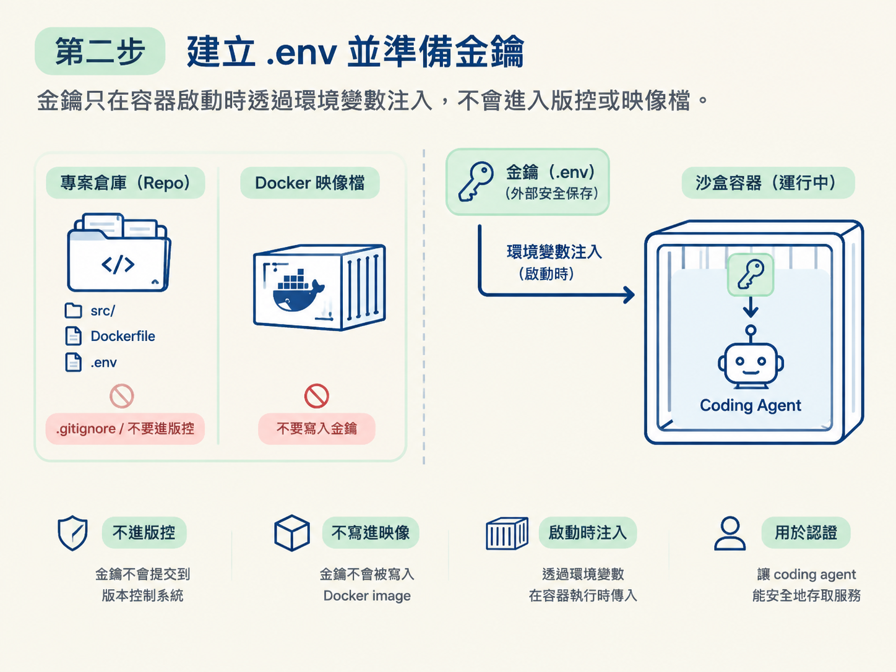
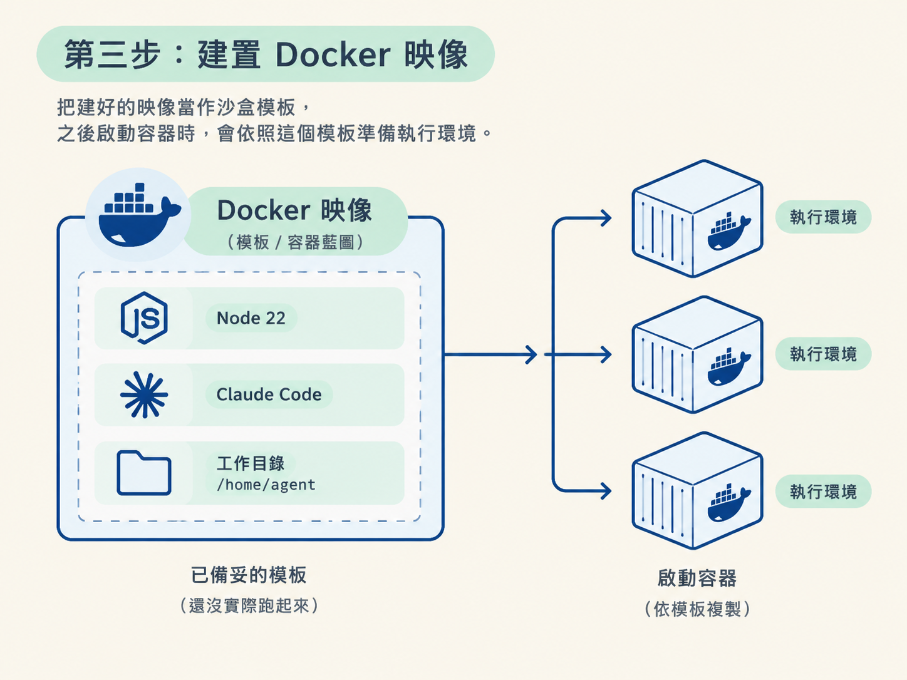

.env 與映像這一課會把 Sandcastle 的容器沙盒實際建起來。完成後，你會有一個可以執行的 Docker 映像，裡面包含 Node 22、Claude Code，以及 /home/agent 工作目錄；同時，沙盒也能在執行時從 .env 取得 Anthropic API key。
開始前，先確認你準備好三樣東西：
接下來會依序完成四件事：準備容器執行環境、建立 .env、建置 Docker 映像，最後確認沙盒已經可以進入下一步測試。
Sandcastle 的沙盒跑在容器裡，因此第一步是讓你的機器可以跑容器。你可以選擇 Docker Desktop 或 Podman。
安裝完成後，終端機應該可以執行容器相關指令，例如確認版本或列出映像。個人專案使用哪一個都可以；如果之後要在公司環境重現這套流程，Podman 可以少一個授權上的麻煩。
.env 並準備金鑰接著進入專案裡的 sandcastle 目錄。裡面會有一個 .env.example，它是環境變數範本，列出沙盒執行時需要注入的設定。先把它複製成正式使用的 .env：
cd sandcastle
cp .env.example .env
# 打開 .env，填入你的 Anthropic API key執行後，預期會看到 sandcastle/ 目錄下多出一個 .env。打開它，填入你的 Anthropic API key。
這個檔案就像沙盒啟動時才交給它的鑰匙：金鑰不會進入版控，也不會被寫進 Docker 映像，而是在容器執行時透過環境變數注入，用來認證你選用的 coding agent。課程錄製當下使用的是 Anthropic API key。

警告：.env 裡放的是真實金鑰。不要把它 commit 進 git，也不要貼給別人。使用環境變數注入，而不是把金鑰寫死在 Dockerfile，正是為了避免金鑰跟著映像和程式碼到處流動。
你手上可能同時有 Claude 訂閱和 Anthropic API key。.env.example 裡也有 GitHub token 欄位，但目前還不用處理；那個欄位要等之後接上 issue 佇列時才會使用。
至於能不能用訂閱方案執行沙盒，課程錄製當下仍沒有穩定的做法，因為牽涉到 Anthropic 的授權問題。當時最實際的選擇是先使用 Anthropic API key：這樣可以立刻把沙盒跑起來，但每次模型呼叫都會按照用量計費。
訂閱方案理論上可能更省，不過當時還沒有一條可靠的路徑。等你閱讀這份教材時，官方情況可能已經改變；如果已有官方指南，再重新評估即可。
設定好 .env 後，回到可以執行 pnpm 的位置，執行以下指令：
pnpm sandcastle docker build image這個指令會按照專案裡的 Dockerfile，建立 Sandcastle 使用的 Docker 映像。建置內容包括：
/home/agent。因此，建好的映像就像一個整理好的沙盒模板：之後啟動容器時，就照這個模板準備執行環境。

預期看到的結果是，終端機會逐步輸出建置過程，最後顯示建置完成。如果中途失敗，先確認 Docker 或 Podman 正在執行，再確認網路能正常拉取映像層，之後重新嘗試。
Dockerfile 也可以依照專案需求調整。預設設定已經能配合 Claude Code 使用；如果你要加裝其他工具、調整 Node 版本，或變更工作目錄，就從這個檔案修改。
建置成功後，請確認兩件事：
.env 已經建立，並填入 Anthropic API key。兩者都具備時，沙盒就進入「ready to go」的狀態，下一步可以用測試程式把 agent 實際放進容器裡執行。
這裡先不要急著跑真正的任務。映像建好了，只代表容器的外觀已經準備完成，還不能證明 agent 能順利在裡面運作。接下來還要驗證容器執行、認證與 logs；這些才是下一步 hello-world 測試要確認的事情。
完成這一課後，你應該已經安裝 Docker Desktop 或 Podman，將sandcastle/.env.example複製成.env並填入 Anthropic API key，然後執行pnpm sandcastle docker build image。建好的映像包含 Node 22、Claude Code，以及/home/agent工作目錄。此時沙盒已經就緒，但還沒有證明 agent 能真的在其中運作。
現在，映像和金鑰都準備好了。下一步會用一支 hello-world 測試把 agent 跑起來，再從 logs 判斷這個沙盒是否真的正常運作。